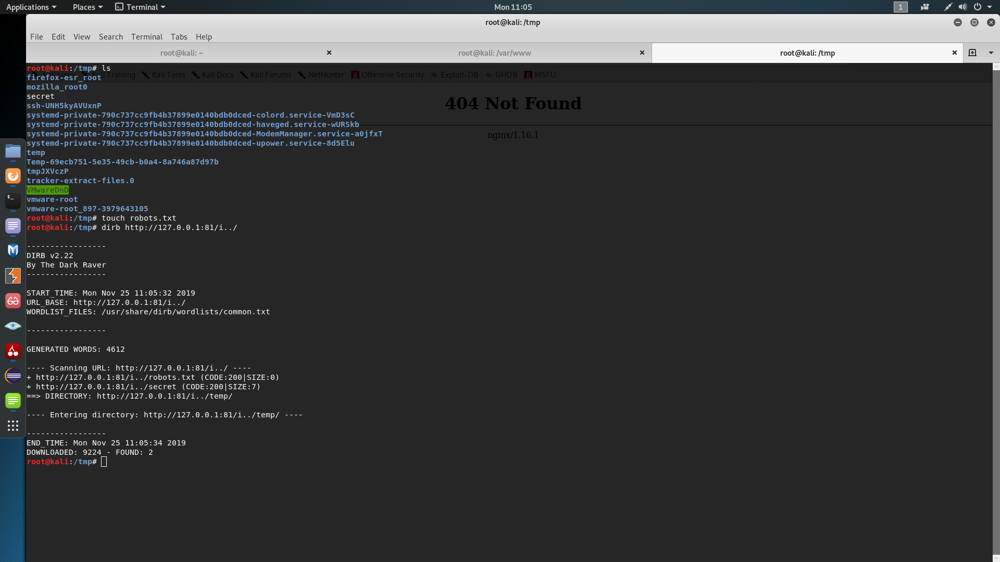

Path?
When reviewing code and hunting for bugs or just simply debugging an issue it is worth looking at config files of course!
Please take your time to understand the excercises
Excercise one: look at the following configuration file and spot a security issue that might arise from it (the first question post on the following page):
In case you do not see what might go wrong, here is an example of a working configuration of my local nginx server:
user www-data;
worker_processes auto;
pid /run/nginx.pid;
include /etc/nginx/modules-enabled/*.conf;
events {
worker_connections 768;
# multi_accept on;
}
http {
server {
listen 81;
root /var/www;
location /i {
alias /tmp/temp/;
}
}
##
# Basic Settings
##
sendfile on;
tcp_nopush on;
tcp_nodelay on;
keepalive_timeout 65;
types_hash_max_size 2048;
# server_tokens off;
# server_names_hash_bucket_size 64;
# server_name_in_redirect off;
include /etc/nginx/mime.types;
default_type application/octet-stream;
##
# SSL Settings
##
ssl_protocols TLSv1 TLSv1.1 TLSv1.2; # Dropping SSLv3, ref: POODLE
ssl_prefer_server_ciphers on;
##
# Logging Settings
##
access_log /var/log/nginx/access.log;
error_log /var/log/nginx/error.log;
##
# Gzip Settings
##
gzip on;
# gzip_vary on;
# gzip_proxied any;
# gzip_comp_level 6;
# gzip_buffers 16 8k;
# gzip_http_version 1.1;
# gzip_types text/plain text/css application/json application/javascript text/xml application/xml application/xml+rss text/javascript;
##
# Virtual Host Configs
##
include /etc/nginx/conf.d/*.conf;
include /etc/nginx/sites-enabled/*;
}
SSL is not used. Apart from that, the problem happens because of missing forward slash in location when using an alias. This mechanism is simple and it's used to serve files from a different location than a root directory. In this example when the user enters localhost:81/i/file.txt in the browser he will access /tmp/temp/file.txt. The issue arises if the attacker enters http://127.0.0.1:81/i../secret in the address bar. In that case the server will look at the /tmp directory. Moreover the attacker can bruteforce the whole directory without knowing which alias it has simply with dirb. Here is an example:
{kind=link}
Extra mile excercise
Take a look at pages 25 and 26 of the following famous research: link. Understand what the code does and think how you would attack the path validation and cleaning functions. In the case you don't try hard enough check also the page 27 for a hint without full explanation :)
 To go places and do things that have never been done before – that’s what living is all about. And then a wild reindeer appeared.
To go places and do things that have never been done before – that’s what living is all about. And then a wild reindeer appeared.